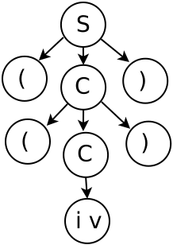

Analizador sintáctico descendente
Funcionamiento del analizador sintáctico descendente. La entrada de un anlizador sintáctico son los tokens entregados por el analizador léxico. La función del analizador sintactico es colocar los tokens en una posición que cumpla con las reglas de sintáxis, que son expresadas por medio de gramáticas libres de contexto.
Tenemos la siguiente gramatica libre de contexto escrita en forma expandida:
S → aCa,
C → aCa,
C → b
Nos fijamos en el tipo de derivaciones ya que las derivaciones son por la izquierda, que nos indica que es un análisis de la raiz a las hojas.
La gramática se puede escribir en forma no expandida de la siguiente manera:
S → aCa,
C → aCa | b
Lo importante de la gramática es que se debe seleccionar solo una producción a usar.
S ⇒ aCa ⇒ aaCaa ⇒ aabaa
Para iniciar con las derivaciones por la izquierda, es necesario comenzar con el símbolo inicial. Esto quiere decir que vamos a iniciar desde la raiz.
Debido a esto la gramática formal es necesaria porque nos indica cual es el símbolo inicial:
G(N, T, S, P)
Ahora se requiere que una cadena de tokens sea colocada en el proceso de derivación. Por lo que la siguiente cadena de tokens, se requiere emparejar con las derivaciones adecuadas. Sea la cadena ((i v)) que se debe reconocer:
S → (C),
C → (C) | i v
Por lo que el inicio de las derivaciones es el uso del símbolo S, como se presenta a continuación:
S ⇒ (C) ⇒ ((C)) ⇒ ((i v))
El árbol es el siguiente:
